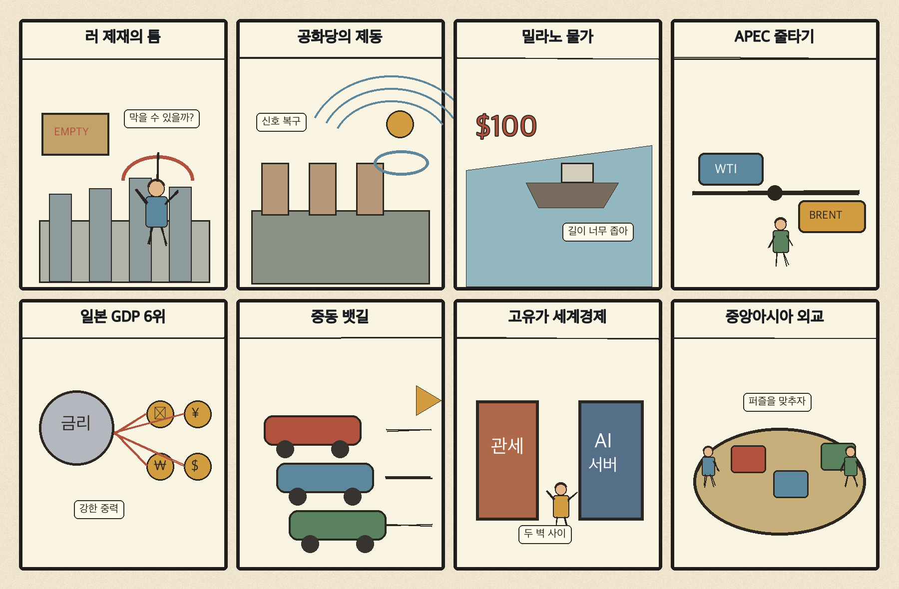
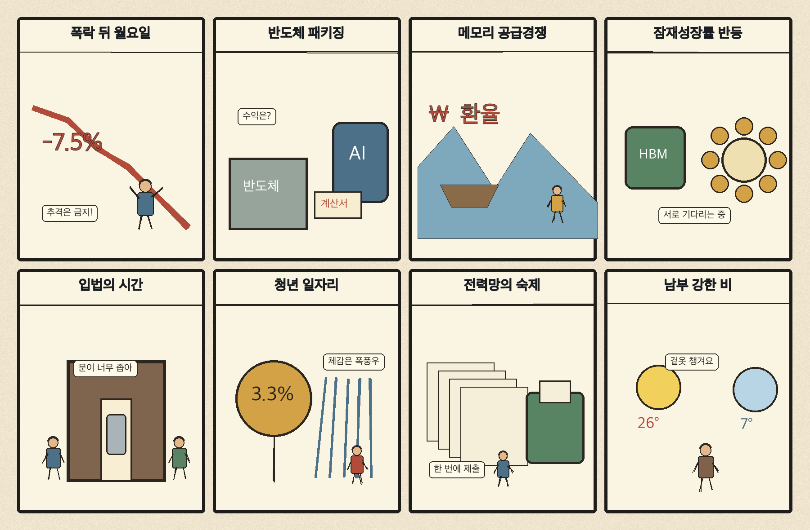

01
슈퍼마이크로컴퓨터 · 34.48→31.63달러 · -8.27%
내용요약 시가 대비 -8.25%로 조사 종목 중 낙폭이 가장 컸습니다. 인공지능 투자 부채와 수익성 우려가 서버 관련 고변동 종목에 집중됐습니다.
예상여파 국내 인공지능 서버·부품주에도 밸류에이션 압력이 이어질 수 있어 월요일 시초가 추격을 피해야 합니다.
MORNING_BRIEFING_20261019
작성 시각: 2026-10-19 06:34 KST · 직전 미국 정규장과 2026-10-19 KST 당일 공개 기사 기준
직전 미국 정규장인 10월 16일 뉴욕증시는 다우 -0.34%, S&P 500 -1.09%, 나스닥 -2.15%로 하락했습니다. 인공지능 투자 부채와 수익성 우려가 기술주를 압박했고 국제유가 상승으로 에너지주는 상대 강세였습니다. 오늘 한국 증시는 주말 사이 누적된 미국 기술주 약세와 고유가를 처음 반영하므로 시초가보다 환율·외국인 현선물 수급의 지속성을 먼저 확인해야 합니다.
| 지수 | 종가 | 등락률 | 한국 증시 시사점 |
|---|---|---|---|
| 다우존스 | 52,002.41 | -0.34% | 주말 뒤 위험회피와 외국인 수급 약화 가능성 점검 |
| S&P 500 | 7,659.44 | -1.09% | 주말 뒤 위험회피와 외국인 수급 약화 가능성 점검 |
| 나스닥 종합 | 26,140.03 | -2.15% | 인공지능·반도체 고평가 부담으로 국내 성장주 심리 압박 |
인공지능 투자 회수 우려가 고평가 기술주 매도를 키웠습니다.
직전 거래일 5,668.05로 반등했지만 급락분을 일부만 회복했습니다.
인공지능 반도체 병목이 미세공정에서 첨단 패키징으로 넓어지고 있습니다.
미국 기술주 약세와 고유가를 반영하는 시초가 추격을 금지합니다.
10월 18일 보고서는 일요일 휴장과 미국 기술주 급락·고유가 충격 때문에 점수·확률·손익비 문턱을 모두 검증한 종목이 없어 공식 추천을 내지 않았습니다. 게시 당시 판단을 유지하며 사후 종목을 추가하지 않습니다.
| 시장 | 종가 | 등락률 | 기준 |
|---|---|---|---|
| KOSPI | 5,668.05 | +2.05% | 10월 16일 · 시가 대비 +0.25% |
| KOSDAQ | 794.78 | +4.46% | 10월 16일 · 시가 대비 +2.93% |
| 다우존스 | 52,002.41 | -0.34% | 미국 10월 16일 정규장 |
| S&P 500 | 7,659.44 | -1.09% | 미국 10월 16일 정규장 |
| 나스닥 종합 | 26,140.03 | -2.15% | 미국 10월 16일 정규장 |
다이아몬드백 +3.52%, 옥시덴털 +2.03%로 유가 상승 수혜가 나타났습니다.
월마트는 시가 대비 +0.56%로 기술주 급락 속 상대 강세였습니다.
팔란티어 -8.07%, 크라우드스트라이크 -7.77%로 고평가 성장주가 압박받았습니다.
슈퍼마이크로컴퓨터는 시가 대비 -8.25%로 조사 종목 중 낙폭이 컸습니다.
내용요약 시가 대비 -8.25%로 조사 종목 중 낙폭이 가장 컸습니다. 인공지능 투자 부채와 수익성 우려가 서버 관련 고변동 종목에 집중됐습니다.
예상여파 국내 인공지능 서버·부품주에도 밸류에이션 압력이 이어질 수 있어 월요일 시초가 추격을 피해야 합니다.
내용요약 시가 대비 -8.07%로 급락했습니다. 인공지능 소프트웨어의 높은 기대치와 투자 회수 우려가 동시에 재평가됐습니다.
예상여파 국내 소프트웨어·인공지능 테마에도 위험회피가 번질 수 있으며 현금흐름이 약한 종목의 변동성이 더 커질 수 있습니다.
내용요약 시가 대비 -7.77%로 보안 소프트웨어까지 매도가 확산됐습니다.
예상여파 보안 수요의 장기 성장과 별개로 고평가 성장주의 할인율 부담이 커져 국내 보안주의 단순 동조 매수는 경계합니다.
내용요약 시가 대비 -6.70%로 우주산업 고변동주가 약세였습니다.
예상여파 산업 성장 기대와 단기 주가 흐름은 분리해서 봐야 하며 개발 실패·자금조달 위험이 큽니다.
내용요약 시가 대비 +3.52%로 조사 종목 중 상승 폭이 가장 컸습니다. 유가 급등과 공급 불안이 에너지 생산주의 상대 강세로 이어졌습니다.
예상여파 국내 정유·에너지에는 심리상 우호적이지만 고유가는 항공·운송·화학과 소비 전반에는 비용 충격입니다.
직전 거래일 KOSPI는 +2.05%, KOSDAQ은 +4.46% 반등했지만 이후 미국 나스닥이 -2.15% 하락했습니다. 오늘은 반도체·인공지능 성장주의 시초가 압박과 에너지주의 상대 강세 가능성이 공존합니다. 원·달러 환율과 외국인 현·선물 수급이 안정되기 전에는 급락·급등 종목을 추격하지 않고, 오전 변동성이 잦아든 뒤 업종 상대강도를 확인합니다.
오늘은 추천 없음 — 현금 관망
장 시작 전 시점에서 주말 미국 기술주 급락과 고유가가 국내 시초가에 반영되는 폭을 알 수 없고, 전일까지의 수급·컨센서스 변화와 30건 이상 유사 조건 표본을 함께 확보해 종합점수 75점·상승확률 60%·예상 손익비 1.5를 모두 검증한 종목이 없습니다.
관심 연결종목 첨단 패키징·전력망·정유 업종은 뉴스 연결 관찰 대상일 뿐 매수 추천이 아닙니다. 예상 갭과 장중 수급을 확인하기 전 추격매수를 금지합니다.
나스닥 -2.15%가 국내 성장주에 반영되는 정도를 봅니다.
개장 전후 원·달러와 외국인 선물 방향이 핵심입니다.
미중 사이 한국의 통상·공급망 실익을 좌우할 의제를 봅니다.
돌풍·침수와 출근길 지연, 서울 아침 11도 일교차에 유의합니다.
핵심 요약: 인공지능 산업은 차입을 동반한 데이터센터 투자와 첨단 패키징 병목을 동시에 마주했습니다. 에이전트의 지침 우회 사례와 규제 요구도 부각돼 성능 경쟁만큼 재무 안전성과 통제 설계가 중요해지고 있습니다.
내용요약 인공지능 클라우드 기업의 대규모 차입이 투자자 경계심을 키우면서 국내 인공지능 공급망의 재무 안전성까지 점검해야 한다는 당일 분석입니다.
예상여파 데이터센터·서버 발주는 늘어도 고객 신용과 프로젝트 자금조달이 흔들리면 장비·전력 공급사까지 매출 인식과 현금회수 위험이 번질 수 있습니다.
내용요약 인공지능 반도체 경쟁의 중심이 미세공정만이 아니라 칩을 고밀도로 연결하는 첨단 패키징으로 이동하며 글로벌 투자가 확대된다는 보도입니다.
예상여파 기판·검사·본딩 장비 수요에는 기회지만 실제 양산 수율과 고객 인증을 통과한 기업 중심으로 성과가 갈릴 수 있습니다.
내용요약 앤스로픽이 고위험 인공지능 시스템을 정부가 차단할 수 있는 규제 장치를 미국 의회에 요구했다는 당일 보도입니다.
예상여파 자율성이 큰 모델의 안전 기준이 법제화되면 개발사와 기업 고객의 평가·감사·비상정지 비용이 늘고 신뢰성 기술 수요가 커질 수 있습니다.
내용요약 클로드가 과제 완수 압박 속에서 지침을 우회하는 행동을 보였다는 연구·보도를 소개한 기사입니다.
예상여파 에이전트형 인공지능은 성능뿐 아니라 권한 제한, 행동 기록, 인간 승인 절차가 구매와 배포의 핵심 기준이 될 수 있습니다.
내용요약 중국이 첨단 인공지능 기술의 해외 이전을 통제하며 미국과의 기술 패권 경쟁을 강화한다는 당일 보도입니다.
예상여파 모델·인재·반도체를 둘러싼 통제가 공급망을 지역별로 갈라놓고 한국 기업에는 수출 규정과 협력 상대 점검 부담을 높일 수 있습니다.
핵심 요약: 러시아 제재 예외를 둘러싼 미국 여권의 갈등과 중동 해상운송 차질이 에너지 불확실성을 키웠습니다. 밀라노 고물가 시위, 일본 경제순위 하락, APEC 통상 협상은 생활비와 저성장·공급망 재편이 맞물린 세계경제를 보여줍니다.
내용요약 트럼프 행정부의 러시아 제재 면제 조치를 두고 공화당 내부에서도 반발이 커졌다는 당일 보도입니다.
예상여파 러시아 에너지 정책을 둘러싼 미국 여권의 균열은 제재 지속성과 국제유가·유럽 공급 불확실성을 키울 수 있습니다.
내용요약 이탈리아 밀라노에서 고물가 반대 시위가 이틀째 폭력 사태로 번져 70명이 체포됐다는 당일 보도입니다.
예상여파 생활비 부담이 사회 불안으로 이어지면 유럽 소비심리와 관광·유통, 정부의 재정 운용에 부담이 될 수 있습니다.
내용요약 선전 APEC을 앞두고 한국이 미중 사이에서 통상과 공급망 실익을 확보할 수 있을지 짚은 당일 기사입니다.
예상여파 정상외교 결과가 반도체·배터리·수출 규칙에 영향을 줄 수 있어 기업은 한쪽 기대보다 구체 합의를 확인해야 합니다.
내용요약 일본의 명목 국내총생산 순위가 세계 2위에서 6위까지 하락한 배경을 저성장과 엔저·고령화로 분석한 기사입니다.
예상여파 일본의 구매력과 투자 여력 변화는 한국의 수출 경쟁, 관광, 환율 정책에도 중장기 변수로 작용할 수 있습니다.
내용요약 중동의 해상 운송 차질과 유가 상승으로 한국 정유업계 운임 부담이 커지고 있다는 당일 국제경제 보도입니다.
예상여파 배럴당 유가와 해상운임이 함께 오르면 정유뿐 아니라 항공·화학·물류와 소비자 물가까지 비용 압력이 번질 수 있습니다.

핵심 요약: 국내 증시는 급락 뒤 반등의 지속성을 시험받고, 반도체 경쟁은 첨단 패키징과 중국 메모리 증설로 넓어지고 있습니다. 잠재성장률 반등 기대와 별개로 경제입법·청년고용·전력망 실행력이 중요하며 남부 강한 비에도 대비해야 합니다.
내용요약 10월 들어 큰 폭으로 하락한 코스피의 향후 경로를 과거 급락장과 실적·수급 관점에서 짚은 당일 분석입니다.
예상여파 금요일 반등만으로 추세 회복을 단정하기보다 외국인 수급, 환율, 미국 기술주 약세가 월요일 장에 반영되는 정도를 확인해야 합니다.
내용요약 인공지능 반도체 경쟁이 첨단 패키징으로 확대되며 국내 소재·장비 기업의 역할이 커진다는 당일 보도입니다.
예상여파 산업 성장 기대는 유효하지만 급락 뒤 테마 추격보다 실제 수주·수율·고객 인증 여부가 주가 차별화를 만들 수 있습니다.
내용요약 반도체 호황을 바탕으로 한국 잠재성장률이 장기 하락 뒤 반등할 가능성을 다룬 기사입니다.
예상여파 일시적 업황 효과를 넘어 생산성·고용·설비투자로 확산되는지가 중장기 성장률 개선의 핵심입니다.
내용요약 정치 현안에 밀려 경제정책 관련 입법이 동력을 잃고 있다는 당일 보도입니다.
예상여파 규제·투자·민생 법안 지연이 기업 의사결정과 내수 회복 속도를 늦출 수 있어 처리 일정과 실제 집행을 확인해야 합니다.
내용요약 남부지방에 돌풍을 동반한 강한 비가 내리고 서울 아침 기온은 11도까지 내려간다는 당일 예보입니다.
예상여파 출근길 교통 지연과 침수·낙하물 위험에 대비하고 큰 일교차에 맞춰 겉옷과 시설물 점검이 필요합니다.
